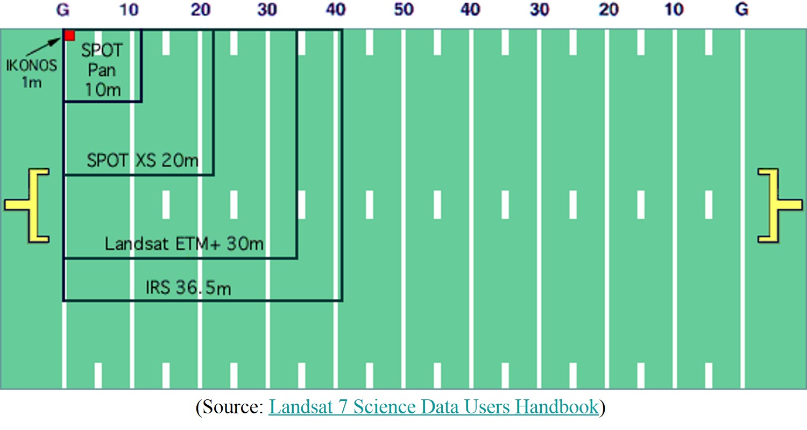
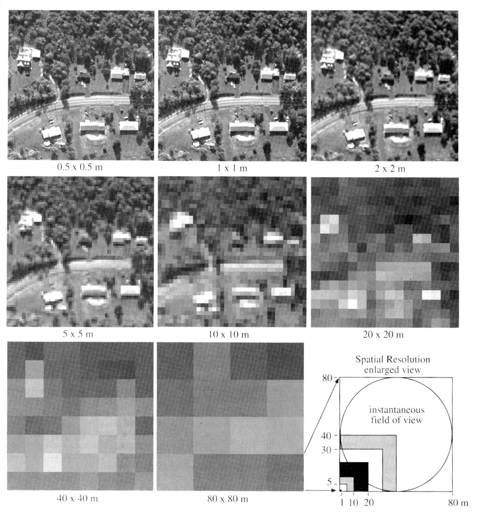
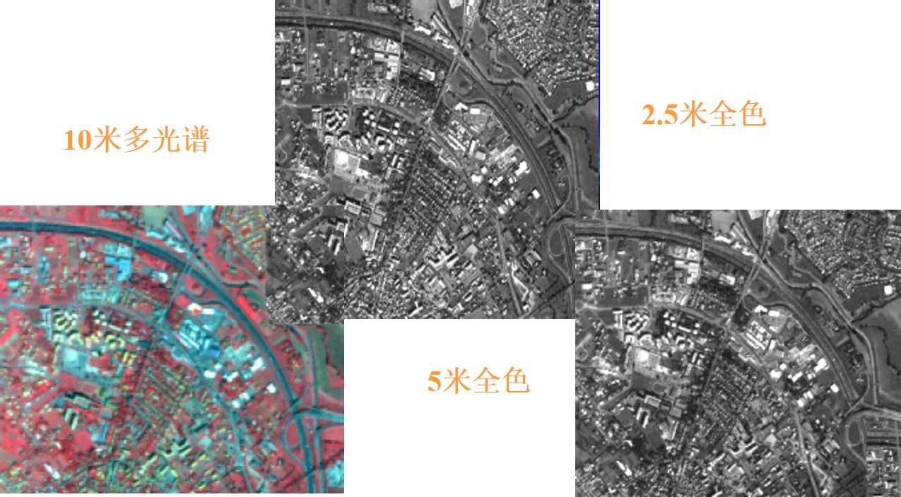

遥感图像的特征
一、遥感图像的空间分辨率
遥感图像的空间分辨率（Spatial resolution）：
1）图像的空间分辨率指像素所代表的地面范围的大小，即扫描仪的瞬时视场，或地面物体能分辨的最小单元。
2）对于摄影成像的图像来说，地面分辨率取决于胶片的分辨率和摄影镜头的分辨率所构成的系统分辨率，以及摄影机焦距和航高。
3）由公式所得的地面分辨率的单位是线对/m，而实际地面分辨的最小间隔（图像能够被分辨出来的地面上两个目标的最小距离）应为线/ m。即地面分辨率/2。
Spatial Resolution
Measure of the smallest angular or linear separation between 2 objects that can be resolved by the sensor.
In practice, sensor system’s nominal spatial resolution is the dimension in meters (or feet) on the ground projected instantaneous field of view (IFOV).
Generally, smaller spatial resolution greater the resolving power of the sensor system.
Graphic representation showing differences in spatial resolution among some well known sensors.
 遥感图像的空间分辨率
SPOT 5的空间分辨率
思考题
是不是遥感空间分辨率越高，其识别物体的能力越强？
二、图像的光谱分辨率
波谱分辨率是指传感器在接受目标辐射的波谱时能分辨的最小波长间隔。间隔愈小，分辨率愈高。传感器的波段选择必须考虑目标的光谱特征值。
Number and size of the bands which can be recorded by the sensor – nominal spectral resolution.
Course – sensitive to large portion of ems contained in a small number of wide bands.
Fine – sensitive to same portion of ems but have many small bands.
Goal – finer spectral sampling to distinguish between scene objects and features.
More detailed information about how individual features reflect or emit em energy increase probability of finding unique characteristics that enable a feature to be distinguished from other features.
Spectral Resolution
Difficult to create detector that has extremely sharp bandpass boundaries such as describe in previous slide.
More precise method of stating bandwidth is look at typical Gaussian-shape of the detector sensitivity.
Describe bandwidth as Full Width at Half Maximum (FWHW)
三、图像的时间分辨率
图像的时间分辨率（Temporal Resolution）:
1）时间分辨率指对同一地点进行采样的时间间隔，即采样的时间频率，也称重访周期。
2）时间分辨率对动态监测很重要。
四、辐射分辨率
辐射分辨率（ Radiometric Resolution ）:
1）辐射分辨率是指传感器接受波谱信号时，能分辨的最小辐射度差。在遥感图像上表现为每一像元的辐射量化级。
2）某个波段遥感图像的总信息量与空间分辨率（以像元数n表示）、辐射分辨率（以灰度量化级D表示）有关。
3）在多波段遥感中，遥感图像总信息量还取决于波段数k。
1.Refers to the sensitivity of the sensor to incoming radiance.
2.How much change in radiance must there before a change in recorded brightness value takes place.
3.This sensitivity to different signal levels will determine the total number of values that can be generated by the sensor
课程总结
1、遥感平台类型；
2、不同系列的卫星，重点掌握陆地卫星系列；
3、摄影成像中摄影像片的几何特性（像片投影、比例尺和像点位移）；
4、扫描成像（固体自扫描、高光谱成像光谱仪）；
5、微波遥感的特点、遥感方式、传感器；
6、遥感图像特征（空间分辨率、时间分辨率、波谱分辨率和辐射分辨率）；